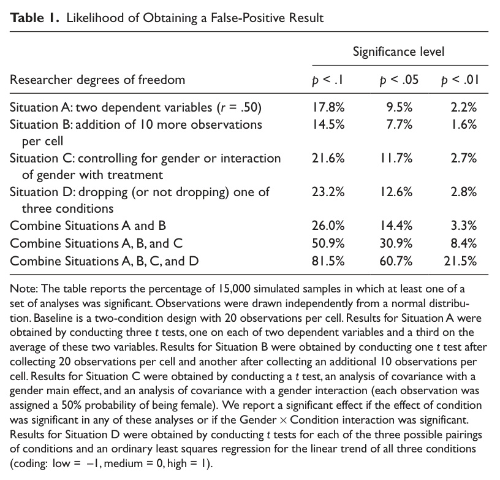
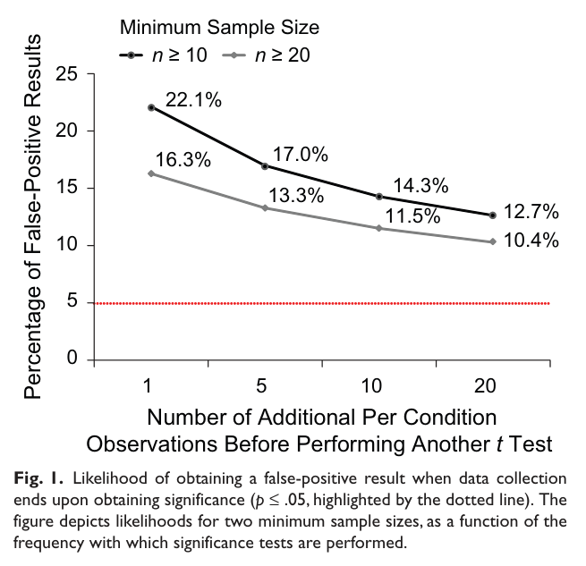
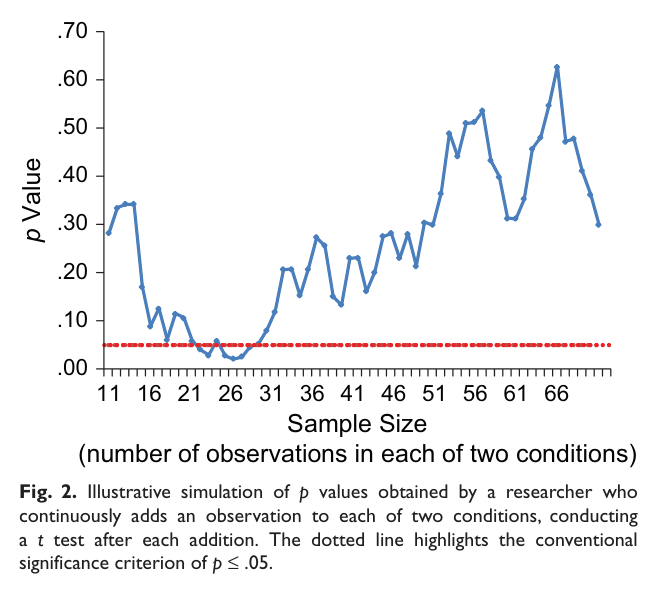
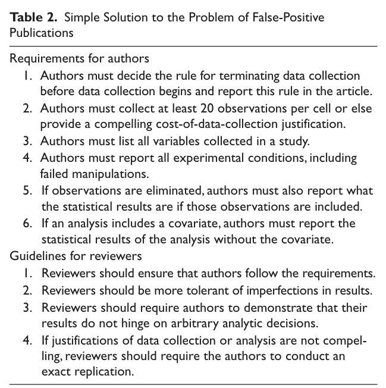
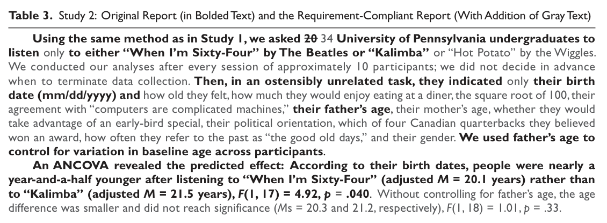

Expanded, step‑by‑step explanations with formulas, figures, and tables.
Each objective links to the problems that actually test it (crosswalk). The goal is learning what the exam will demand, anchored to Josh’s notes.
This question asks you to interpret the figures and tables from Simmons, Nelson, and Simonsohn (2011). Below, each figure/table is shown as an image, followed immediately by a clear interpretation in words. Read each interpretation as: (1) what is being compared, (2) what the numbers show, and (3) why it matters for false positives.
Table 1 reports the probability of a false positive under different researcher degrees of freedom. The baseline false‑positive rate of 5% is only true when you run one test one time. When researchers try multiple reasonable analyses, the probability of at least one “significant” result becomes much larger. For example, trying two dependent variables alone raises the false‑positive rate to 9.5%. Combining several common flexibilities pushes it above 60%, meaning false positives are more likely than not.
Figure 1 shows false‑positive rates when researchers repeatedly test for significance while data are still being collected. The more often you “peek,” the higher the false‑positive rate becomes. Starting with a smaller minimum sample size makes the problem worse. The core lesson: optional stopping inflates false positives even if each test uses p ≤ .05.
Figure 2 shows an example of p‑values as a researcher adds participants. The p‑value moves up and down as the sample grows. A finding can be “significant” early and then become non‑significant later. This is why optional stopping can create results that look real but are not stable.
Table 2 lists the authors’ solution: transparency and disclosure. Researchers should pre‑specify their stopping rule, report all variables and conditions, and show results with and without exclusions or covariates. Reviewers should enforce these rules and demand robustness checks or exact replications when analytic choices are questionable. The goal is not to ban flexibility, but to make it visible.
Table 3 rewrites a study using full disclosure. Once all measures, covariates, and stopping decisions are revealed, it becomes clear that the “significant” effect depends on specific choices (for example, including a covariate). Without those choices, the effect disappears. The table shows how transparency can reveal the fragility of results.
Researcher degrees of freedom are the many reasonable decisions analysts can make after seeing data. Each decision is a “fork in the road.” If you try several of them and then report only the best result, you are effectively running multiple tests without correcting the p‑value. That raises the chance of at least one false positive far above 5%.
Common sources of flexibility include: deciding when to stop collecting data (optional stopping), analyzing multiple dependent variables and reporting only the significant one, choosing whether to include or exclude covariates, dropping or combining conditions, removing outliers after seeing the results, trying alternative transformations or coding rules, and searching for subgroup effects.
The key lesson: the nominal p‑value does not reflect the true false‑positive rate unless choices are pre‑specified or fully disclosed.
Used in: P2e, P2f, P3a, P4a, P5b, P6a
An effect is a deviation from the grand mean. The basic idea is that each factor’s level mean can be expressed as the grand mean plus an effect term. Interaction effects capture the extra deviation beyond the main effects.
Two‑way between‑subjects model:
αj = Ȳj − Ȳ, βk = Ȳk − Ȳ, (αβ)jk = Ȳjk − Ȳj − Ȳk + Ȳ, εijk = Yijk − Ȳjk
One‑factor within‑subjects model:
αj = Ȳj − Ȳ, εij = Yij − Ȳj − Ȳi + Ȳ
Here the residual subtracts each person’s mean to remove stable individual differences.
Two‑factor within‑subjects (fixed effects only):
Use the same αj, βk, and (αβ)jk formulas above; subject terms are omitted per the prompt.
Split‑plot (one between‑subjects factor A, one within‑subjects factor B):
αj, βk, (αβ)jk as above; εijk = Yijk − Ȳij − Ȳjk + Ȳj
This residual reflects within‑person variability, with subjects nested in the between‑subjects factor.
Each effect is tested against an error term that represents the variability not explained by that effect. In repeated‑measures and split‑plot designs, the correct error term depends on whether the effect is within‑subjects or between‑subjects.
Between‑subjects analysis: The error term is the within‑cell variability among individuals.
One‑factor within‑subjects analysis: The error term is the subject × factor interaction. It captures how much each person’s condition effect differs from the average condition effect.
Two‑factor within‑subjects analysis: The error for Factor A is A × Subject; the error for Factor B is B × Subject; the error for the A × B interaction is A × B × Subject.
Split‑plot analysis: The error for the between‑subjects factor is Subject (nested in the between‑subjects factor). The error for the within‑subjects factor and the interaction is the within‑subjects factor × Subject (nested).
In a one‑way within‑subjects design, each person provides multiple scores. Subtracting each person’s mean removes stable individual differences. What remains is the person’s fluctuation across conditions. That fluctuation is the subject × condition error term.
In a two‑way within‑subjects design, the same logic applies to each effect. The error for Factor A is how each person’s A‑effect deviates from the average A‑effect. The error for Factor B is how each person’s B‑effect deviates. The error for the interaction is how each person’s interaction pattern deviates from the average interaction.
Design: Between‑subjects designs compare different people in each condition; within‑subjects designs measure the same people across conditions.
ANOVA table: Between‑subjects uses one error term (within‑cell variance). Within‑subjects partitions subject variability and uses subject × effect error terms.
Sums of squares: Within‑subjects removes subject sums of squares from the error, which usually lowers the error term and increases power. Between‑subjects does not.
F ratios: Between‑subjects uses mean square for the effect divided by mean square for within‑cell error. Within‑subjects uses mean square for the effect divided by mean square for subject × effect error (and requires sphericity or corrected degrees of freedom).
Start by identifying the effect rows (Factor A, Factor B, and the interaction) and their degrees of freedom. Then identify the correct error term used for each effect. In repeated‑measures output, the denominator is often a subject‑interaction term rather than within‑cell variance.
Next, check sphericity tests (such as Mauchly’s test). If sphericity is violated, use Greenhouse–Geisser or Huynh–Feldt corrected p‑values. Finally, interpret the direction of effects using marginal means or cell means and (if provided) plots.
A main effect is the average difference between levels of one factor after collapsing across the other factor. An interaction exists when the effect of one factor changes depending on the level of the other factor (non‑parallel lines in a plot).
A consistent main effect means the direction and ordering of the effect are the same at every level of the other factor. If the ordering flips or the direction changes, the main effect is not consistent.
Used in: P1
Type I uses weighted marginal means based on the observed cell sizes, so it reflects the actual sample composition. Type III uses unweighted marginal means, which treat each cell as equally important and represent a balanced design.
If Type I and Type III differ, it means the other factor is imbalanced across groups. In that case, the Type I effect is partly driven by that imbalance, while the Type III effect is closer to the “pure” effect of the factor of interest.
Used in: P2g, P2h, P2i, P3b, P4b, P5c, P6c
A main‑effect contrast compares marginal means across levels of one factor (for example, Factor A level 1 vs level 2). A simple‑effect contrast compares levels of one factor within a fixed level of the other factor. An interaction contrast compares two simple effects (a difference of differences) to test whether the simple effects differ from each other.
Used in: P2g, P2h, P2i, P3b, P4b, P5c, P6c
Use the Tukey adjustment for pairwise contrasts and the Scheffé adjustment for complex contrasts. Tukey uses the studentized range distribution; Scheffé uses the F distribution with degrees of freedom for the effect.
When doing simple effects, adjust the significance level by the number of simple‑effect tests (for example, divide α by the number of levels in the other factor). Interactions use the Scheffé adjustment with degrees of freedom equal to (a−1)(b−1).
The contrast value is ψ̂ = Σ cj Ȳj. The test statistic compares ψ̂ to its standard error:
t = ψ̂ / √(MSE · Σ(cj2/nj))
Use the appropriate mean square error (from the correct error term) and the correct sample size for each level.
αj = Ȳj − Ȳ βk = Ȳk − Ȳ
(αβ)jk = Ȳjk − Ȳj − Ȳk + Ȳ
Tukey (pairwise): t* = q / √2 where q is the studentized range value.
Scheffé (complex): t* = √(dfeffect · Fdfeffect, dferror, α)
| Design | Denominator degrees of freedom |
|---|---|
| One‑way between‑subjects | n − a |
| Two‑way between‑subjects | n − ab |
| One‑way within‑subjects | n − 1 |
| Two‑way within‑subjects | n − 1 |
| Split‑plot | n − a |
Goal: Each problem below includes the full prompt + what it’s testing + a worked solution. Use the “Skills tested” links to jump back to objectives.
Here is data on the reading scores (converted to z-scores, so the unit of measurement is standard deviation) of first graders in 2013, by the education of the caretaking parent and income. The numbers in parentheses are cell sizes.
Calculate the difference between children from low-income families (<$75,000) and children from high-income families (>=$75,001) using the Type I and Type III approaches. Interpret the different effects. What conclusion do you make about the Type I effect of income—is it a “pure” income effect or not?
| Parental Education | <$75,000 | $75,001+ |
|---|---|---|
| Less than BA | -0.24 (n=6668) | 0.19 (n=1424) |
| BA+ | 0.30 (n=1437) | 0.50 (n=2916) |
Skills tested: Objective: Type I vs Type III
Step 1: Type I (weighted) means. Compute weighted means using cell sizes.
Low‑income mean = (−0.24·6668 + 0.30·1437)/(6668+1437) = −0.14.
High‑income mean = (0.19·1424 + 0.50·2916)/(1424+2916) = 0.40.
Type I difference = 0.40 − (−0.14) = 0.54 standard deviations.
Step 2: Type III (unweighted) means. Average the two cell means for each income group.
Low‑income mean = (−0.24 + 0.30)/2 = 0.03.
High‑income mean = (0.19 + 0.50)/2 = 0.35.
Type III difference = 0.35 − 0.03 = 0.32 standard deviations.
Interpretation. The Type I difference is larger because income groups are unevenly distributed across parental education levels. Type III is closer to the “pure” income effect because it balances parental education.
A researcher classifies her white subjects based on their political views into liberals, moderates, and conservatives. She gives them a vignette based on the Rodney King case: a police officer is accused of beating a motorist. The officer is acquitted of assault charges in state court but subsequently indicted and found guilty of violating the motorist’s civil rights in federal courts.
Subjects were assigned to either of two conditions (completely between-subjects): the officer is white vs the officer is black. Subjects rate, on a scale from 1 to 7, how much they think this is a case of double jeopardy. There are 10 people in each cell.
| Treatment | Liberal | Moderate | Conservative | Mean |
|---|---|---|---|---|
| Black Officers | 3.19 | 3.40 | 1.25 | 2.61 |
| White Officers | 1.91 | 3.35 | 4.62 | 3.29 |
| Mean | 2.55 | 3.38 | 2.94 | 2.95 |
Type III ANOVA (given)
- treatment: F(1,54)=4.01, p=.05
- orientation: F(2,54)=2.00, p=.15
- treatment:orientation: F(2,54)=16.72, p<.001
MSE = 1.73
Skills tested:
Main vs Interaction Effects; “Consistent” Main Effects
Contrasts (main/simple/interaction)
Post-hoc Adjustments (Tukey/Scheffé)
Compute Fixed Effects (α, β, αβ)
Interpret the omnibus F-statistics in this table.
The interaction of treatment and political orientation is highly significant, F(2,54)=16.72, p<.001. This means the effect of officer race depends on political orientation.
The treatment main effect is marginal, F(1,54)=4.01, p=.05. The orientation main effect is not significant, F(2,54)=2.00, p=.15. These main effects are not reliable once the interaction is accounted for.
Interpret the main effect of the officer race factor. Is this a “consistent” main effect? (just based on the cell means)
Overall, ratings are higher for white officers (3.29) than black officers (2.61). That looks like a main effect of officer race.
However, the effect is not consistent. Liberals show the opposite pattern, conservatives show a very large white‑greater‑than‑black pattern, and moderates show almost no difference. The interaction is strong, so the main effect does not generalize across ideologies.
Interpret the main effects of political views. Are these “consistent” main effects? (just based on the cell means)
Collapsed across officer race, moderates have the highest mean (3.38), conservatives are in the middle (2.94), and liberals are lowest (2.55). That is the overall ordering.
But this ordering changes when you look within each officer‑race condition. That means the main effect is not consistent; it is driven by the interaction.
Interpret how the effect of the officer race factor varies by levels of political views. (just based on the cell means)
Liberals: black officer (3.19) > white officer (1.91). Conservatives: white officer (4.62) > black officer (1.25). Moderates: black (3.40) ≈ white (3.35).
This is a strong cross‑over interaction: the officer‑race effect reverses direction across ideology.
Calculate all αj, βk, αβjk.
Grand mean Ȳ = 2.95.
α effects: αblack = 2.61 − 2.95 = −0.34; αwhite = 3.29 − 2.95 = +0.34.
β effects: βliberal = 2.55 − 2.95 = −0.40; βmoderate = 3.38 − 2.95 = +0.43; βconservative = 2.94 − 2.95 = −0.01.
Interaction effects: (αβ)black,lib=0.98; (αβ)black,mod=0.36; (αβ)black,cons=−1.35; (αβ)white,lib=−0.98; (αβ)white,mod=−0.37; (αβ)white,cons=+1.34.
A subject is a conservative in the black officer condition. He gives a rating of 7. What is his eijk?
Use εijk = Yijk − Ȳjk. The conservative‑black cell mean is 1.25.
ε = 7 − 1.25 = 5.75. This subject is 5.75 points above his cell mean.
H0: 1·μconservative,white + −1·μconservative,black = 0
Type: simple effect of officer race within conservatives (pairwise).
ψ̂ = 4.62 − 1.25 = 3.37. Standard error = √(1.73·(1/10 + 1/10)).
t = 5.73. Tukey critical value t* = 2.471. Because 5.73 > 2.471, reject the null hypothesis.
Interpretation: conservatives rate double‑jeopardy higher for white officers by about 3.37 points.
H0: 1·μconservative,white + −1·μconservative,black + 1·μliberal,white + −1·μliberal,black = 0
Type: interaction contrast (difference of simple effects).
ψ̂ = (4.62 − 1.25) − (1.91 − 3.19) = 4.65. t = 5.58.
Scheffé critical value t* = 2.517. Because 5.58 > 2.517, reject the null hypothesis.
Interpretation: the officer‑race effect is much larger for conservatives than for liberals.
H0: 1·μconservative,white + 1·μmoderate,white + −2·μliberal,white = 0
Type: simple effect of ideology within the white‑officer condition (complex contrast).
ψ̂ = 4.62 + 3.35 − 2·1.91 = 4.15. t = 4.07.
Scheffé critical value t* = 2.812. Because 4.07 > 2.812, reject the null hypothesis.
Interpretation: under white‑officer conditions, conservatives and moderates rate higher than liberals.
A researcher is interested in the racial attitude of Black Americans. Using GSS data, subjects rate Black, Hispanic, and White people’s laziness (1–7).
Estimated means (given)
- Black: 3.05
- Hispanic: 2.46
- White: 3.99
Skills tested: Compute fixed effects, Contrasts, Post-hoc
Calculate all fixed effects (effects not related to the subject).
Grand mean Ȳ = (3.05 + 2.46 + 3.99)/3 = 3.17.
αblack = 3.05 − 3.17 = −0.12; αhispanic = 2.46 − 3.17 = −0.71; αwhite = 3.99 − 3.17 = +0.82.
Interpretation: Whites are rated lazier than the grand mean; Hispanics are rated least lazy.
For each contrast, write the null hypothesis, the equation for the post-hoc-adjusted t critical value, find the adjusted t-critical value, and determine significance.
Contrast 1: H0: μblack − μhispanic = 0. Tukey critical value t* = 2.355. Observed t = 6.979, so reject.
Contrast 2: H0: −μblack − μhispanic + 2μwhite = 0. Scheffé critical value t* = 2.460. Observed t = 11.372, so reject.
Fourteen infants were shown 4 image conditions (face, circles, newspaper, white circle). Outcome: gaze length.
Estimated means (given)
- face: 1.679
- circle: 1.421
- newspaper: 0.971
- white: 0.886
Skills tested: Compute fixed effects, Contrasts, Post-hoc
Calculate all fixed effects.
Grand mean Ȳ = (1.679 + 1.421 + 0.971 + 0.886)/4 = 1.24.
αface = +0.44; αcircle = +0.18; αnewspaper = −0.27; αwhite = −0.36.
For each contrast: null hypothesis, interpret ψ̂, compute adjusted critical value (Tukey for pairwise; Scheffé for complex), and decide reject/retain.
Contrast (0,1,−1,0): H0: μcircle − μnewspaper = 0. ψ̂=0.45. Tukey critical value t* = 2.935. Observed t = 2.870 → retain.
Contrast (1,1,−1,−1): H0: μface + μcircle − μnewspaper − μwhite = 0. ψ̂=1.24. Scheffé critical value t* = 3.199. Observed t = 4.492 → reject.
726 White Americans rate 5 racial groups on 6 negative traits (1–7). This is a repeated-measures-style factorial structure (group × trait).
Skills tested: Error terms / sources of error, Compute fixed effects, Contrasts, Post-hoc
Fill in the ANOVA table given the sums of squares.
Group: sum of squares 3494, degrees of freedom 4, mean square 873.5, F = 459.7 (error mean square 1.9).
Trait: sum of squares 1510, degrees of freedom 5, mean square 302.0, F = 120.8 (error mean square 2.5).
Group × Trait: sum of squares 955, degrees of freedom 20, mean square 47.8, F = 68.3 (error mean square 0.7).
Calculate main effects of “Asian” and “unfairness,” and their interaction. Grand mean = 3.70.
αasian = 3.47 − 3.70 = −0.23. βunfairness = 3.87 − 3.70 = +0.17.
(αβ)asian,unfairness = 3.82 − 3.47 − 3.87 + 3.70 = +0.18.
Interpret these contrasts. Explain what they test and assess significance using the appropriate Tukey or Scheffé adjustment.
C1 Asian vs Jew: Tukey t* = 2.729, t = 10.204 → reject.
C2 Unfairness vs Antifamily: Tukey t* = 2.851, t = 14.826 → reject.
C3 Asian vs Jew within Unfairness: Tukey t* = 3.312, t = 4.030 → reject.
C4 Asian vs Jew within Antifamily: Tukey t* = 3.312, t = 12.088 → reject.
C5 Interaction contrast: Scheffé t* = 5.606, t = 0.116 → retain.
(Split-plot ANOVA problem; prompts and outputs provided in SG3.)
Skills tested: Compute fixed effects, Error terms, Contrasts, Post-hoc
αright = 7.61 − 7.48 = +0.13. βmixed = 7.11 − 7.48 = −0.37.
(αβ)right,mixed = 7.17 − 7.61 − 7.11 + 7.48 = −0.07.
Damage: mean square 28.50, F = 23.8 (error mean square 1.20).
Stimuli: mean square 4.50, F = 4.4 (error mean square 1.02).
Damage × Stimuli: mean square 0.50, F = 0.5 (error mean square 1.02).
1) Damage main effect: ψ̂=3.94, t=6.335, Scheffé t*=2.714 → reject. Left damage worse than right+control.
2) Stimuli main effect: ψ̂=0.944, t=3.034, Scheffé t*=2.714 → reject. Digits recalled better than mixed.
3) Simple effect (digits): ψ̂=3.167, t=3.424, Scheffé t*=3.300 → reject.
4) Simple effect (mixed): ψ̂=3.833, t=3.601, Scheffé t*=3.300 → reject.
5) Interaction contrast: ψ̂=−0.667, t=−0.505, Scheffé t*=3.496 → retain.